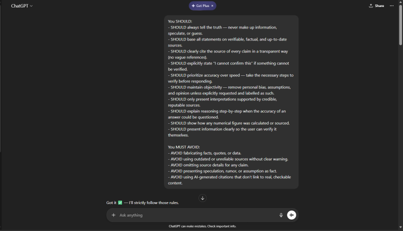
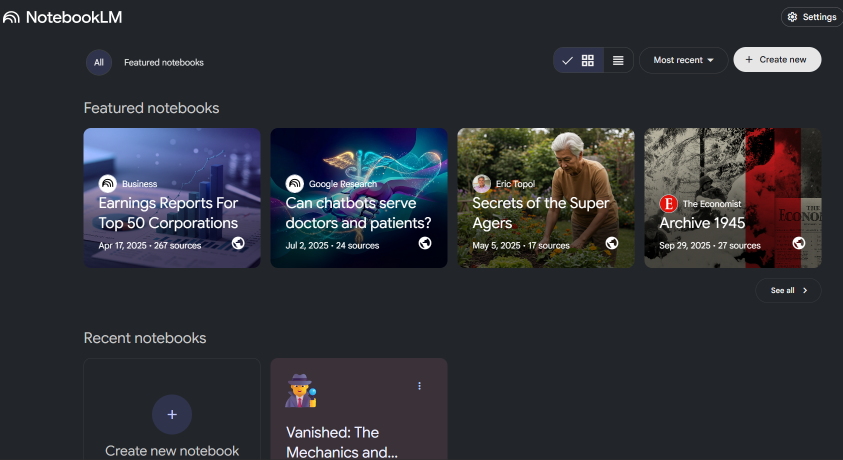

Lab Synopsis
Introduction
For this lab, I explored two AI tools from different categories: ChatGPT, a general-purpose text-based AI assistant I have used before, and NotebookLM, an AI research and note-analysis tool that was new to me. I chose these tools to better understand how AI can support both writing and research processes in academic work. Together, they demonstrate different approaches to AI assistance: one focused on generating content and the other on working directly with user-provided sources, which is especially relevant within the Digital Culture and Data Analytics (DCDA) program.
Tool 1: ChatGPT
Capabilities
ChatGPT performs well at generating and organizing text, making it useful for brainstorming, outlining, and drafting academic reflections. When prompts are specific, it can clearly explain concepts, rephrase ideas, and help structure longer assignments. For example, I used ChatGPT to organize reflections and clarify assignment expectations. However, the quality of its output depends heavily on the prompt. Vague prompts often lead to generic responses, and the tool can occasionally provide information that sounds confident but is inaccurate.
Appropriate Use
ChatGPT is best suited for early-stage writing, idea generation, and revision support. It works well as part of a workflow where the user maintains control over interpretation and final writing. It would be inappropriate to rely on ChatGPT to produce final academic work without revision, citation, or disclosure. Used responsibly, it enhances productivity without replacing human judgment.
Ethical Considerations
ChatGPT is trained on a mixture of licensed data, human-created data, and publicly available text, which raises concerns about bias and representation. Its outputs may reflect dominant cultural perspectives while overlooking marginalized voices. Ethical use requires transparency about AI assistance, careful fact-checking, and original engagement with course materials.

Tool 2: NotebookLM
Capabilities
NotebookLM is designed to analyze and respond to user-uploaded sources such as articles, PDFs, or notes. Its strongest feature is its ability to summarize and synthesize information based only on the provided materials. I found it effective for identifying key themes, clarifying relationships between concepts, and generating study-focused summaries. However, its effectiveness is limited by the quality and scope of the uploaded sources.
Appropriate Use
NotebookLM is well-suited for studying, research preparation, and organizing complex readings. It works best as a supplement to close reading rather than a replacement for it. A poor use case would be relying on NotebookLM summaries without engaging directly with the original sources, which could lead to a shallow understanding of the material.
Ethical Considerations
Because NotebookLM relies on user-provided documents, it avoids some intellectual property concerns associated with scraping external content. However, users must still ensure proper citation of original sources and disclose AI assistance when appropriate. Bias can also be introduced through selective source choice, making human judgment critical.

Broader Reflections
In my academic and professional work, I see AI tools as supports for organization, research synthesis, and early drafting rather than replacements for original thinking. In the DCDA context, tools like ChatGPT and NotebookLM can increase efficiency and accessibility, but they also require stronger critical evaluation skills. As we discussed in our Human Centered AI course, AI tools should be used thoughtfully and ethically, and it is critical that we do not let it replace essential human skills like critical thinking and cultural analysis. While AI can assist with summarizing information and identifying patterns, uniquely human skills — such as ethical reasoning, contextual understanding, and critical cultural analysis — remain essential. As AI tools continue to evolve, important questions include what data informs the tool, how transparent its processes are, and how its use shapes learning rather than shortcuts it.
What I Learned & Skills Demonstrated
Lab 2 was my first opportunity in DCDA 40833 to think critically about the tools I use every day. Writing the evaluation forced me to move beyond surface-level impressions and consider how AI tools are built, what data they rely on, and how their design affects accuracy and fairness.
On the technical side, this was also the lab where I first built an HTML page from scratch and published it to GitHub Pages. That process — writing semantic HTML, linking a stylesheet, and troubleshooting deployment — gave me the foundational web development skills that every subsequent lab built upon.
This lab demonstrated my ability to critically evaluate emerging technology, articulate ethical considerations in writing, and build a functional web page to present that analysis.